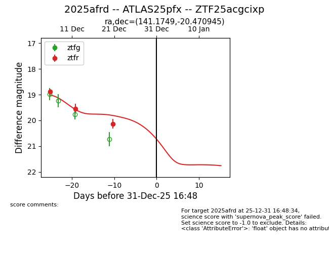
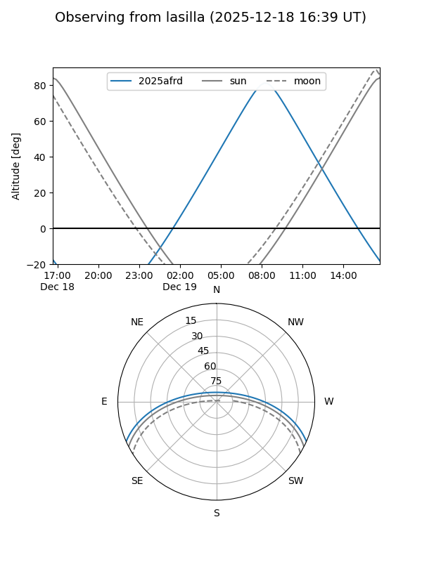
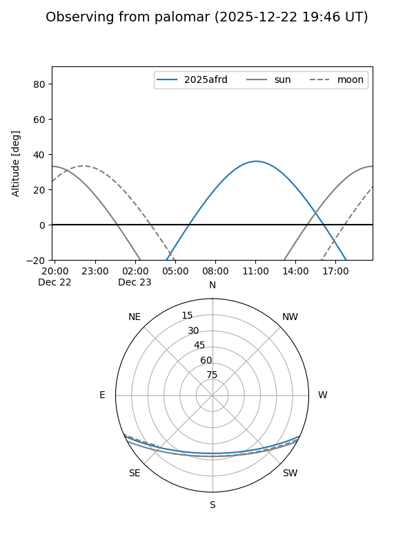

2025afrd
Target 2025afrd at 2025-12-18 11:17
Aliases and brokers:
FINK: fink-portal.org/ZTF25acgcixp
Lasair: lasair-ztf.lsst.ac.uk/objects/ZTF25acgcixp
ALeRCE: alerce.online/object/ZTF25acgcixp
TNS: wis-tns.org/object/2025afrd
YSE: ziggy.ucolick.org/yse/transient_detail/2025afrd
alt names
ZTF25acgcixp (ztf,fink_ztf)
2025afrd (tns,yse)
ATLAS25pfx (atlas)
Coordinates:
equatorial (ra, dec) = 141.1749,-20.47094
equatorial (HMS+DMS) = 09:24:41.97,-20:28:15.40
galactic (l, b) = (251.0198,+20.94467)
Photometry
last ztfr=19.54
2 ztfr detections
Lightcurve

Visibility


Additional plots